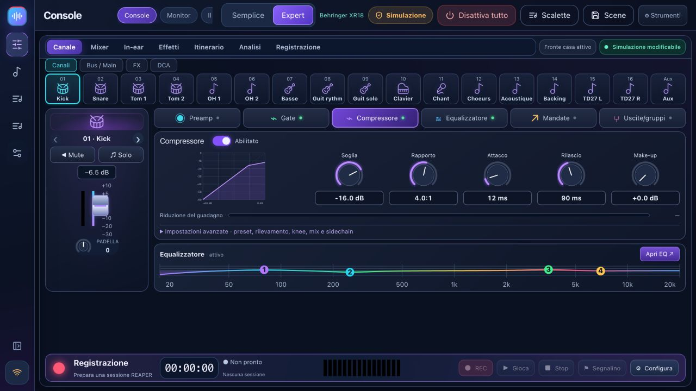

Coach del soundcheck
Sei passaggi: connessione, mappatura degli strumenti, misurazione del guadagno, risoluzione dei problemi, preparazione dei monitor e salvataggio. Il coach legge le misurazioni del mixer, non l'audio.
Prepara il tuo sound check, tieni il mixer in vista, assegna a ciascun musicista il proprio mix di monitoraggio e prova con le basi musicali. Gratuito, locale e creato per le band.
XR18 / X18 · MR18 · XR12 / MR12 · X32 parziale: vedere funzionalità e convalida di seguito.

Français · English · Italiano · Español · Deutsch
Cambia lingua in Impostazioni → Opzioni · Lingua, senza riavviare. Menu, comandi, aiuti e conferme seguono la tua scelta. Ogni musicista può scegliere la propria lingua sul telefono.
La preferenza viene salvata su questo dispositivo; i nomi delle canzoni, delle scene e dei musicisti rimangono invariati. Altre lingue possono essere aggiunte su richiesta. Richiedi una lingua
Il design attuale di BandPilot 2.2.4: canali a colori, elaborazione e monitor personali. Fai clic su una schermata per ingrandirla. Le schermate di dettaglio qui sotto sono in francese.


I layout personali ricordano i canali visibili, la larghezza del canale e la visibilità del pannello di uscita in base al modello del mixer e alle dimensioni dello schermo. Il banco monitor riunisce il mix, l'equalizzazione del bus e il compressore di ogni musicista.
REAPER bridge 1.2.3 isola le richieste simultanee e riprova i blocchi di file temporanei senza ripetere la registrazione.
Esplora 2.2.2 →Le funzionalità avanzate dipendono dal mixer. La matrice spiega cosa è disponibile e cosa rimane sperimentale.
Sei passaggi: connessione, mappatura degli strumenti, misurazione del guadagno, risoluzione dei problemi, preparazione dei monitor e salvataggio. Il coach legge le misurazioni del mixer, non l'audio.

Navigazione compatta, banchi di canali, mix principale, bus, DCA ed elaborazione dei canali. Preamplificatore, gate, compressione, EQ, mandate, effetti e routing dipendono dal modello.
Un link QR personale solo per ogni musicista e il suo bus. Fader, mute, profili salvati e livelli limitati. Le autorizzazioni di controllo si aggiornano senza ricaricare.
Con basi musicali o solo band: sezioni, take, forme d'onda, presenza, riproduzione originale, loop e marker. Richiede il ponte REAPER 1.2.3.
Prepara una sessione, seleziona le tracce, registra WAV a 24 bit e monitora il trasporto. USB multitraccia su XR18/MR18/X18; XR12/MR12 utilizzano un registratore stereo su chiavetta USB.

Libreria di brani, setlist, prove e note archiviate sul tuo computer. Mostra trasporto, sezioni e finali del brano con REAPER/ReaCue configurato.
Cattura lo stato del mixer, importa/esporta JSON, visualizza in anteprima le modifiche e conserva un backup prima del richiamo. Il richiamo guidato della scena esclude l'alimentazione phantom per impostazione predefinita.
Misuratori e spettro X-Air, consulenza A/B, account opzionali e diagnostica. L'intelligenza artificiale connessa opzionale utilizza la tua chiave; ReaCue e le scene native hanno limiti documentati.

La simulazione ti consente di esplorare e preparare le impostazioni. I livelli simulati non vengono mai presentati come misurazioni reali. REAPER rimane una vera applicazione audio.
Discovery legge l'identità del mixer sulla tua rete locale. Nome, marchio e controlli si adattano; i modelli sconosciuti vengono rifiutati. Le connessioni iniziano in sola lettura.
| Modello | Capacità | Stato in questa versione |
|---|---|---|
| Behringer XR18 / X18 | 16 canali mono + Aux stereo · 6 uscite Aux · 18×18 USB | Famiglia principale. Verifiche hardware eseguite su XR18; X18 ha ancora bisogno di conferme. |
| Midas MR18 | 16 canali mono + Aux stereo · 6 uscite Aux · 18×18 USB | Profilo e protocollo testati in simulazione; convalida hardware in sospeso. |
| Behringer XR12 / Midas MR12 | 12 ingressi · 4 preamplificatori microfonici · 2 uscite Aux fisiche | IU e limiti adattati. Registrazione stereo su chiavetta USB, nessuna interfaccia multitraccia per PC. Convalida hardware in sospeso. |
| Behringer X32 / Rack / Compact / Producer / Core | 32 canali · 16 bus · 8 DCA · 6 matrici | SPERIMENTALE/PARZIALE: mixaggio, EQ, dinamiche di base e mandate. Preamplificatore completo, routing, FX, misuratori, scena e supporto USB non disponibili. |
Un montaggio di screenshot della simulazione di BandPilot 2.2, senza dimostrazione del controllo audio o hardware. I capitoli e una trascrizione accompagnano il video.
Scegli il programma di installazione giusto, esplora la simulazione, connetti in sola lettura e prepara un backup.
Guida completa →Sei passaggi spiegati, misurazioni reali, proposte da rivedere, monitor e una scena salvata.
Coach per il soundcheck passo dopo passo →Installa il bridge 1.2.3, apri il tuo progetto, verifica le tracce armate, scegli le riprese ed esegui il loop di una sezione.
REAPER →I programmi di installazione vengono pubblicati insieme dopo i test e i controlli di avvio di Windows, macOS e Linux. Controlla la versione di rilascio nella pagina dei download.
BandPilot è il nuovo nome di XR18 Studio. Eseguire il backup delle scene prima dell'aggiornamento; gli identificatori dei dati legacy vengono conservati.
Modifiche e limitazioni della release · Codice sorgente del MIT
Sì. BandPilot è gratuito e open source con licenza MIT. REAPER è un software separato con la propria licenza.
No. Le funzionalità dipendono dal modello e dalla convalida. Il supporto X32 è parziale e sperimentale. Controllare la matrice prima dell'uso dal vivo.
No. Legge le impostazioni, i contatori e le misurazioni del mixer disponibili. I consigli per l'ascolto iniziano con la tua descrizione e necessitano di un controllo dell'orecchio.
Il controllo locale funziona senza Internet o un account. Computer, mixer e telefoni devono condividere una rete locale. L'intelligenza artificiale connessa opzionale richiede Internet e la tua chiave API.
BandPilot è il suo nuovo nome. Il repository e gli identificatori tecnici legacy vengono conservati per preservare la cronologia e i dati. Eseguire il backup delle scene prima dell'aggiornamento.